Ontem, você fazia tudo sozinho. Hoje, chega o seu braço direito.
Pegue o seu crachá e escolha um lugar pra sentar
Conecte o notebook na tomada abaixo da mesa
Wi-fi: Weworkguest (preencha nome e e-mail)
Abra o aplicativo Claude do seu computador
📖 Manual do aluno
michelchung-stack.github.io /imersao/manual/
e no grupo do WhatsApp
Tudo pronto? ☕ Vai pro café. Travou? Chama a equipe R2.
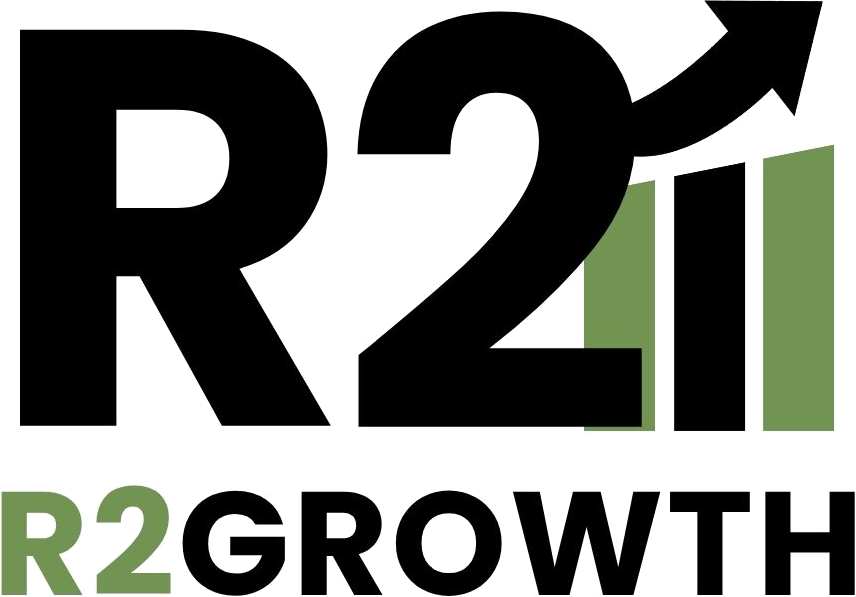
Imersão
Claude Code
Dois dias · IA aplicada a negócios
Ontem, você ouviu falar de IA.
Hoje, você vai colocar pra trabalhar.
Dois dias pra tirar a IA do chat e colocar ela pra trabalhar na sua empresa, sem escrever uma linha de código.
Por que essa imersão existe
Não é uma ferramenta nova. É um jeito novo de trabalhar.
Ganhar tempo
O relatório que tomava a noite fica pronto sem você.
Cortar o repetido
O copia e cola da equipe sai da rotina.
Decidir melhor
O problema aparece antes de virar prejuízo, não depois.
Ninguém dirigia com ele. Hoje, ninguém dirige sem.
Um ano atrás, eu nunca tinha usado. Hoje, não trabalho sem.
Essa imersão existe pra você sair daqui trabalhando assim, não só sabendo que isso existe.
Quem vai conduzir o dia
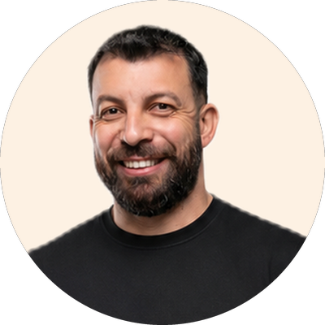
Thiago Marcelino
Sócio da R2 Growth — gestão e números para quem vende em marketplace. Dono da Diretriz — fábrica de moda vendendo exclusivamente no Mercado Livre, Shopee, Shein e TikTok Shop. Não programador.
Ontem, tudo dependia de mim.
Hoje, roda sem mim.
A TELA INICIAL DA MINHA EMPRESA
Controle de fabricaçãotrês pessoas lançando — e o erro aparece antes de pagar a oficina
Performance de vendaso que vendeu, o que caiu e por quê, toda semana
Valentinaatende no WhatsApp 24 horas e agenda, cobra e lança
CRMcada cliente e cada cobrança num lugar só
Nenhum foi feito por programador. Tudo nasceu de uma dor real da minha operação.
O mapa do dia
Hoje é o primeiro dia dele na sua empresa
Sexta · a base
1
Conhecer quem ele éIA generativa
2
Aprender a conversarprompt
3
Apresentar a empresamemória
4
Dar os acessosconectores (MCP)
5
Treinar nos processosskills (habilidades) e plugins
6
Fazer a primeira entregaagente
7
Feedback toda semanamelhoria contínua
Sábado · a obra cada um sai com o sistema da sua dor em construção
1
O terrenoterminal
2
A plantaCLAUDE.md global e contexto
3
As ferramentasplugins e GitHub
4
O projetobrainstorm, plano e spec (o projeto no papel)
5
A equipe da obravários terminais e Remote Control (controle remoto)
6
A construçãoback-end e front-end
7
A vistoriarevisão e segurança
O contrato da imersão
No fim da imersão, você sai com:
1
Um Claude que conhece a sua empresa
O que você vende, pra quem e do seu jeito, guardado na sua conta.
2
Skills e agentes trabalhando por você
Sua primeira skill (habilidade) e um agente (assistente com função definida) cuidando de uma tarefa repetida.
3
O método pra fazer a próxima
Sozinho, sem a gente do lado e sem escrever código.
Travou? Levanta a mão — Marina, Thiago ou Mateus vão até você. Ninguém fica pra trás.
Antes de começar · o combinado
Cinco combinados pra você não perder nada
1 · Presença nos dois dias
Um bloco monta o próximo, e a sexta monta o sábado: quem perde a sexta não acompanha o sábado.
2 · Celular no silencioso
Quem entra e sai quebra a concentração da sala inteira.
3 · Água e banheiro nas pausas
Três pausas garantidas, nos dois dias: café da manhã, almoço e café da tarde.
4 · Anote — não confie na memória
Bloquinho na mesa: anote termos e sites — é o que você reabre na segunda.
5 · Dúvida: anota e pergunta no fim
A gente para pra perguntas no fim de cada bloco. Travou na prática? Levanta a mão na hora.
🎙️ E o microfone vai rodar: a cada troca de bloco a gente passa pra alguém contar o que mais chamou atenção. Pode ser você — então vem ligado(a).
Quem vai conduzir o dia
Michel Chung
Sócio da R2 Growth — gestão e números para quem vende em marketplace. Dono da Unbrand — fábrica de moda vendendo exclusivamente no Mercado Livre, Shopee, Shein e TikTok Shop. Não programador.
Ontem, isso era coisa de programador.
Hoje, o empresário faz.
A TELA INICIAL DA MINHA EMPRESA
App Modupreço e margem por canal
Dashboard R2os números dos clientes da consultoria
Reposiçãoo que fabricar esta semana
Fullo que mandar pro estoque do Mercado Livre
Nenhum existia há um ano. Nenhum foi feito por programador. E o meu time inteiro usa, todo dia.
A escada do dia
Bloco 1 — Conhecer quem ele é
nome técnico: IA generativa (LLM)
1Conhecer quem ele é
2Aprender a conversar
3Apresentar a empresa
4Dar os acessos
5Treinar nos processos
6Fazer a primeira entrega
7Feedback toda semana
O que é inteligência artificial?
Um cérebro que leu quase tudo que já foi escrito.
Mora aqui, num data center. Não no seu computador.
nome técnico: LLM (grande modelo de linguagem)
JUN 2026Leu até aqui. O que veio depois, ela pesquisa na internet. data de corte (knowledge cutoff)
Um funcionário genial no primeiro dia: sabe tudo do mundo, nada da sua empresa.
Por que "generativa"?
Ela não busca. Ela cria.
Ela gera — não devolve o que alguém já escreveu. Foi treinada no jeito que a gente escreve, e por isso responde conversando.
O mapa das plataformas
Cérebros
Fazem quase tudo — se você der contexto.
LLM (modelo de linguagem).
Fechadosclosed
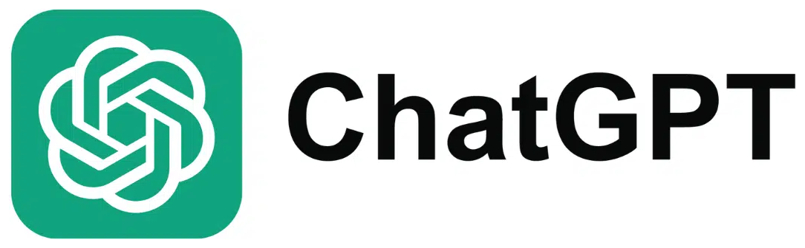
Abertosopen weights
QwenKimi
Especialistas
Fazem uma coisa só — muito bem.
App de IA (software pronto pra uma dor).
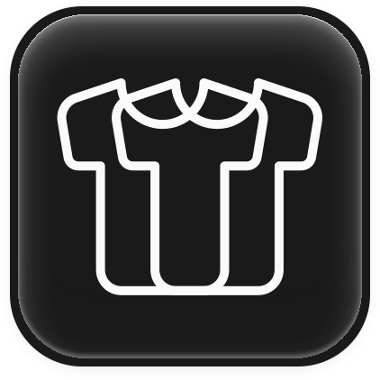
FashnMidjourney
Corpos
Dão mãos ao cérebro: pastas, navegador, WhatsApp.
Harness (o corpo). Cérebro + corpo = agente.
Claude Code
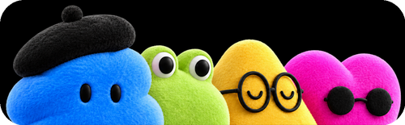
dotsGrok BotMuse
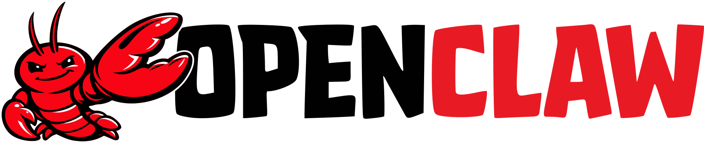
Marketplaces de cérebros (agregadores)Os mesmos cérebros, revendidos num lugar só, uma mensalidade. Bom pra experimentar — não tem pasta nem habilidade (skill).
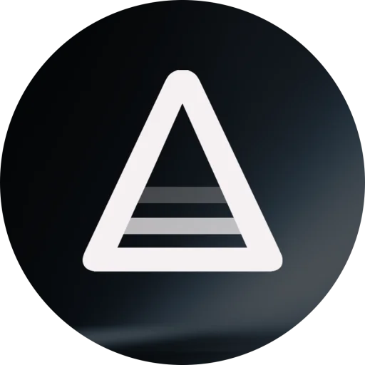
AdaptaPoe
Pare de colecionar assinaturas. Aprenda a dar contexto ao cérebro — e dê um corpo a ele.
Harness (o corpo)
O que vem no corpo do Claude.
cérebro (LLM)
O appsexta
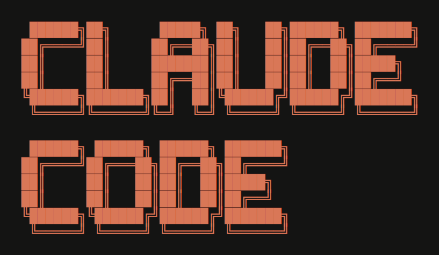
Pra construir sistemasábado
Mãoso que ele alcança
ConectoresMCP
Claude in Chromenavegador
Computer useusar o computador
Treinoo que ele sabe fazer
Skillshabilidades
Pluginspacotes prontos
Claude Designespecialista em design e slides
Memóriao que ele lembra
Memóriamemory: lembra de você
Projetosprojects: um por assunto
Manual da empresaCLAUDE.md
Rotinaonde ele trabalha
No seu PC (local)
Suas pastas e programassó com o PC ligado
Na nuvem (cloud)
Tarefas agendadasscheduled tasks, com o PC desligado
Pelo celularpede de qualquer lugar
O potencial
Entra tudo. Sai trabalho pronto.
O que entra
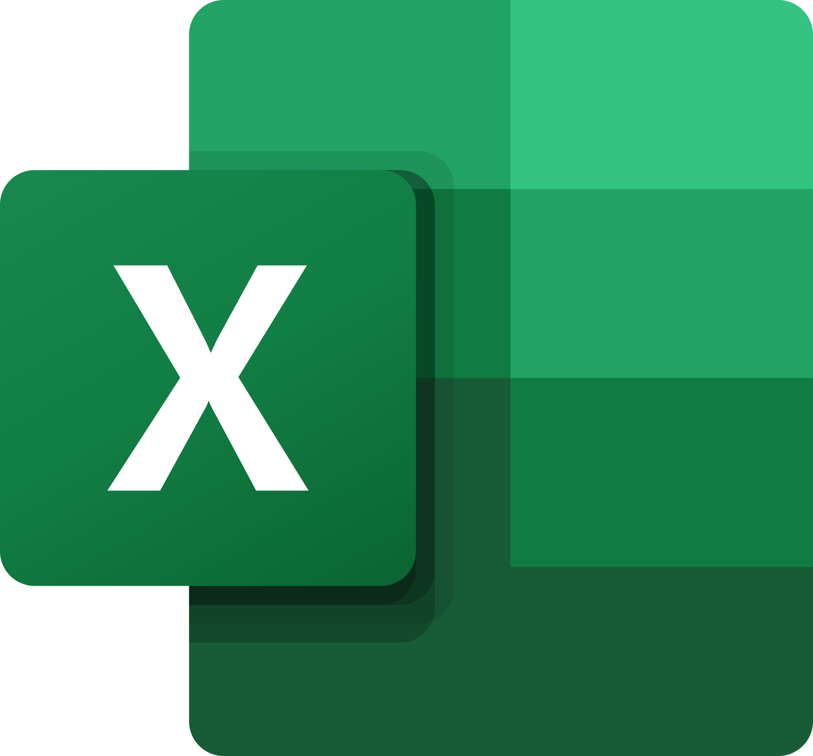
Planilha
Documento
Foto e print
Letra à mão
Sua voz
Áudio
Vídeo
Site
Pasta inteira
Seus sistemas
→
O que sai
Análise
Pesquisa
Relatório
Texto pronto
Planilha
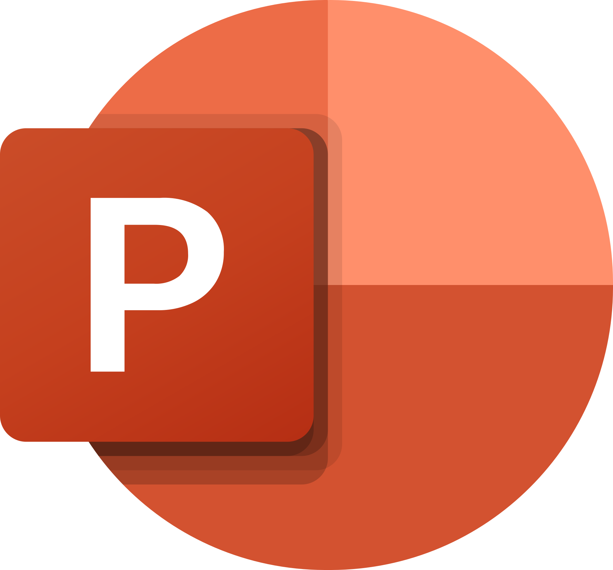
Apresentação
Design
Vídeo
App
Automação
O ecossistema do Claude
Os dois são agentes (cérebro + harness): recebem uma missão.
Agente
Ele faz.
O trabalho pronto, com a sua pasta.
Sexta é aqui
Agente
Ele constrói.
O sistema que fica de pé: app, integração, banco de dados.
No app (aba Code)No terminal
Sábado é aqui
Quer o trabalho pronto? Claude. Quer um sistema que fica de pé? Claude Code.
Quanto custa
IndividualTeamEnterpriseAPI— hoje a gente fica aqui
Grátis
R$ 0
✓Conversa, pra conhecer
✓Habilidades (skills) e design — até no grátis
✗Opus
✗Claude Code
✗Extensão do Chrome
Pro — comece aqui
R$ 110/mêsou R$ 92/mês no anual (R$ 1.100 à vista)
✓O app do Claude na sua pasta — a sexta
✓Claude Code — o sábado
✓Extensão do Chrome
✓Opus 5.5 — o cérebro dos dois dias
Conselho da casaMax — o destino
R$ 550/mêsa partir de · 5x ou 20x o uso do Pro
✓Tudo do Pro, 5 a 20 vezes mais uso
✓Fable 5.1 dentro do plano
✓US$ 100 a 200/mês de crédito na API
O Pro é pra começar. Usou de verdade, a cota acaba rápido: vai pro Max.
Como a cota funciona
Janela de 5 horas
Começa no seu primeiro pedido, não num horário fixo: pediu às 10h, renova às 15h.
Limite da semana
Roda por cima da janela de 5 horas e renova em dia fixo da sua conta.
Só existem esses dois — não tem limite diário nem mensal.
O que se gasta são tokens (pedacinhos de texto): tarefa pesada e modelo grande gastam mais rápido.
O seletor
O mesmo Claude, em duas medidas.
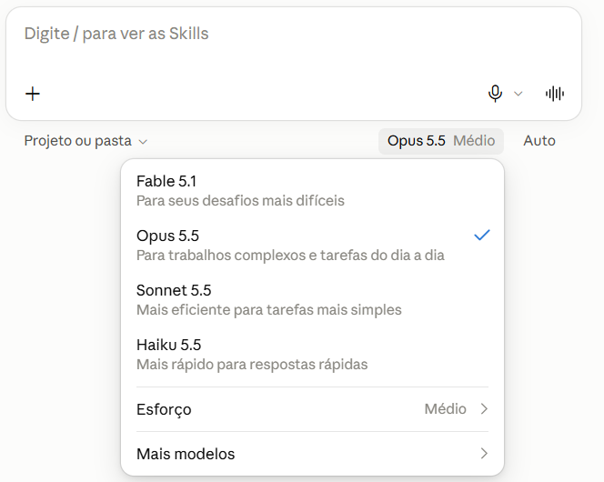
App do Claude: clica no nome do modelo, embaixo da caixa de texto.
Modeloo tamanho do cérebro
Fable 5.1não clica: no Pro paga à parte
Opus 5.5pra quase tudoNOVO
Sonnet 5.5mais rápidoNOVO
Haiku 5.5o mais rápidoNOVO
Esforçoquanto ele pensa antes de responder
BaixoMédioAltoExtraMáx
gasta menos · vem no Médiopensa mais, gasta mais
Acabou a cota?Espera a janela renovar (5 horas) · liga o uso extra e paga por uso · sobe pro Max (5 a 20 vezes mais uso)
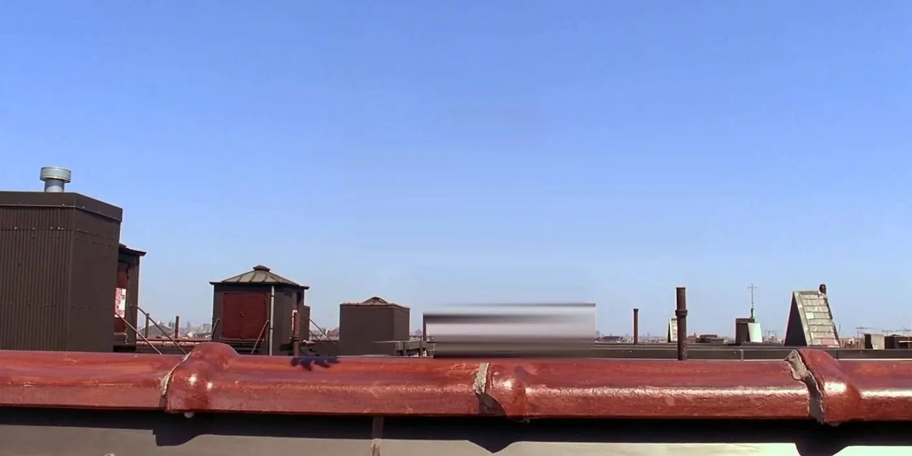
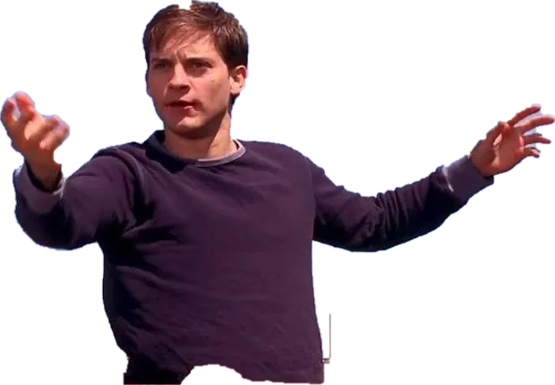
pfff…
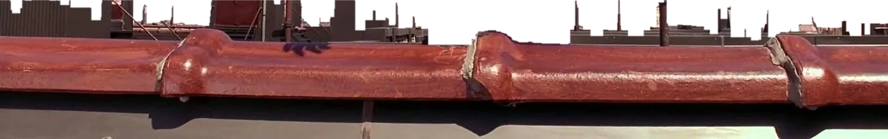
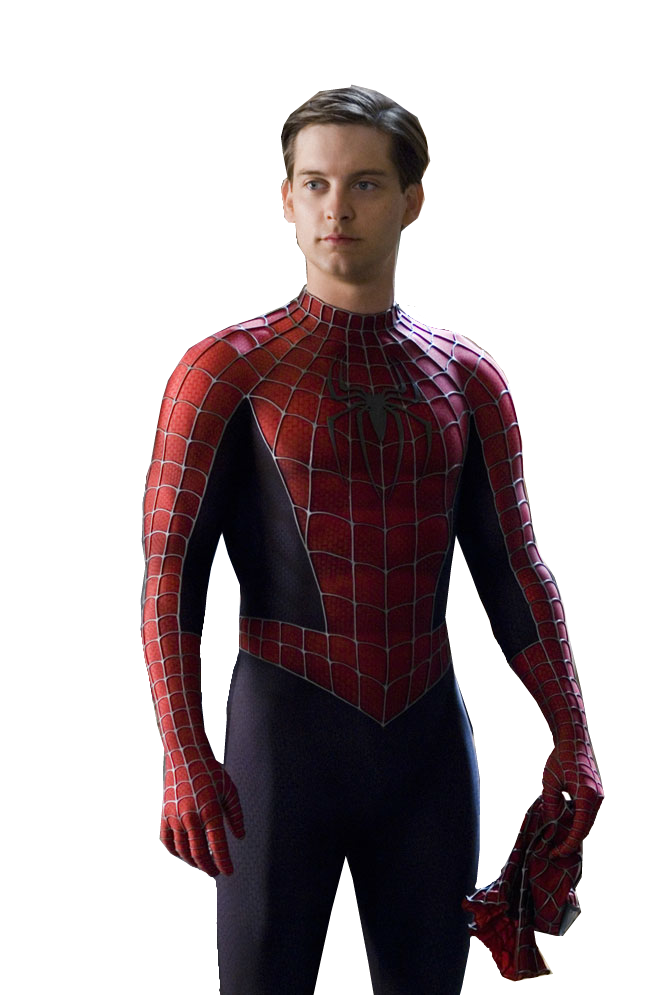
Resumo do Bloco 1Vocês acabaram de ganhar um superpoder.O resto do dia é aprender a usar.
🎙️ Alguma dúvida? Alguém quer compartilhar?
Microfone · 1 de 5
A escada do dia
Bloco 2 — Aprender a conversar
nome técnico: Prompt
1Conhecer quem ele é
2Aprender a conversar
3Apresentar a empresa
4Dar os acessos
5Treinar nos processos
6Fazer a primeira entrega
7Feedback toda semana
A primeira habilidade
O prompt
Prompt é o nome técnico do pedido: tudo que você escreve e anexa
Ele é o seu input. A resposta é o output
A qualidade do input determina a qualidade do output.
O método
A receita do bolo
Os três ingredientes de um bom prompt
1 · O contexto
A situação: quem você é, pra quem é o resultado, o que importa saber.
2 · O porquê
O objetivo do pedido: sabendo o motivo, ele decide melhor cada detalhe.
3 · O formato
Como você quer o resultado: HTML, tabela, texto? Tom, tamanho e o que não pode ter.
O método
A receita completa
Pedido grande? Abre a receita inteira.
1 · O contexto
Contextomeu negócio
Públicopra quem é
Insumos
Planilha
Documento
Foto
Letra à mão
Voz
Áudio
Vídeo
Site
Pasta
Sistemas
2 · O porquê
Objetivoo que eu quero e por quê
Sucesso =o que diz que a tarefa está entregue
Conferircomo ele confere antes de te entregar
3 · O formato
Tarefaverbo + entrega
Formatoestrutura, tamanho, tipo de arquivo
Exemploum modelo de referência
Restriçõeso que não fazer, e o motivo
Antes de executarMe faça perguntas se faltar algo e mostre o plano. Só depois, executa.
Exemplo
O mesmo pedido, dois prompts
1 · Na correria2 · Com a receita completa
Me ajuda a organizar minha rotina.
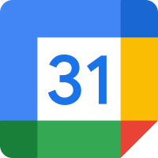
agenda-da-semanaequipe.xlsx
Contexto: empresa de 8 pessoas, vivo apagando incêndio.
Objetivo: parar de ser o gargalo.
Tarefa: monta a minha rotina de dono.
Insumos: minha agenda e a lista da equipe.
Público: eu. Vai pra parede da sala.
Restrições: nada de acordar às 5h.
Formato: dia, semana e mês. Uma página.
Exemplo: tipo checklist de abertura de loja.
Sucesso: seguir 2 semanas sem largar.
Conferir: vê se cabe em 1 página.
Antes de executar: me pergunte e mostre o plano.
1 · Volta isso:
Acorde às 5h
Priorize
Revise metas
de revista
2 · Volta isso:
Minha rotina
Dia
Semana
Mês
1 página, na parede
O método
Antes de pedir
Em que altura você está pedindo?
1Ideia
“Me dá dez caminhos pra eu ganhar tempo.”
2Proposta
“Pega o caminho 3: quanto custa, quanto tempo, quem faz.”
3Execução
“Fechado. Agora faz — escreve, monta, calcula.”
4Resultado
“Fiz. Deu certo? O que eu ajusto na próxima?”
Clareza é saber em que altura você está. A maioria pede execução quando ainda está na ideia — e recebe uma resposta certa pra pergunta errada.
Dicas de ouro
Antes de ir pra prática
Três dicas de ouro
1 · Com preguiça de escrever?
Aperte o microfone e fale.
Falado sai mais rico que digitado.
2 · Deixe ele perguntar
“Ficou claro? Me pergunta antes de fazer.”
Funcionário bom pergunta.
3 · O que você não está vendo
“O que eu estou esquecendo?”
Pergunta de consultor caro. Aqui custa uma linha.
Prática
Antes de praticar: quem é você?
Cada um tem um prompt pronto. Escolha o seu.
Sozinho
Você e o seu negócio
sai a sua ficha
Casal
Vocês dois tocam juntos
sai a ficha da dupla
Time
Vários da mesma empresa
sai o manual do time
1Prompt do manual
Prática
Pegue o seu prompt no manual
Você não escreve nada. Copia, cola e responde.
1
Abra o manual do alunono notebook · link no grupo ou QR code
2
Escolha e clique em CopiarSozinho, Casal ou Time
3
Cole numa conversa novano app do Claude
4
Responda as perguntasfalando ou escrevendo · não feche: volta depois do café
Manual do alunoPrática 1 · Deixe ele te conhecer
SozinhoCasalTime
CONTEXTO: Vou usar você todo dia no meu trabalho, mas ainda não te contei nada sobre mim… TAREFA: Me entrevista. Começa pelo básico… …
Copiar
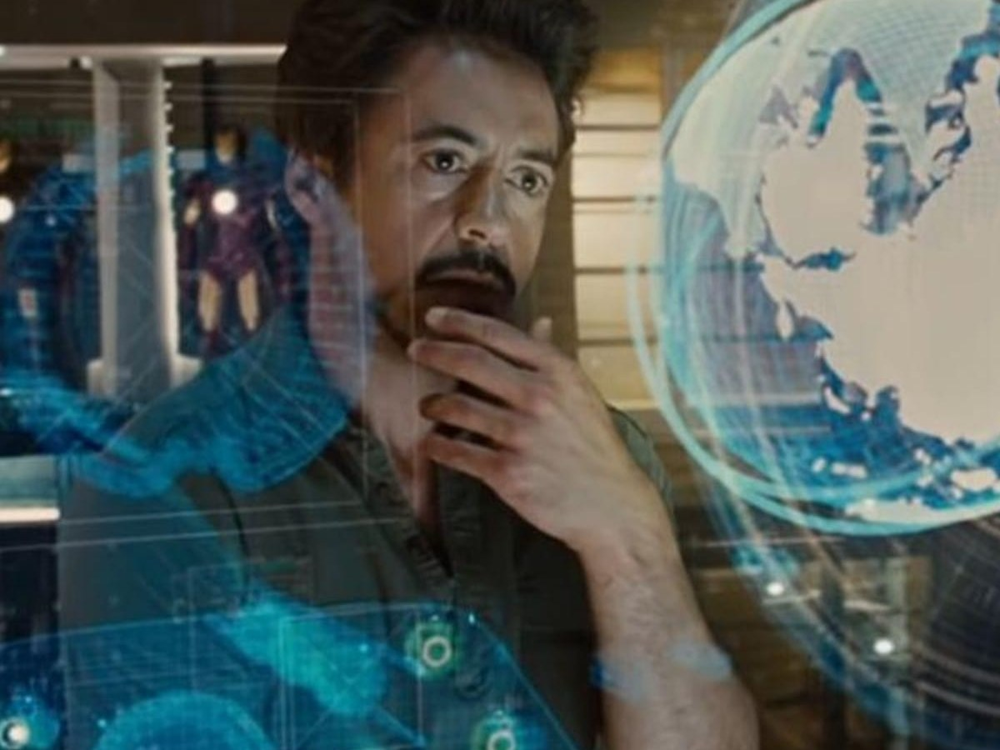
Microfone · 2 de 5
Antes do café
🎙️ O microfone vai rodar
Dúvida
O que ficou travado? A gente responde agora.
Como foi
Rodou o prompt do manual? Conta o que ele te perguntou e a ficha que voltou.
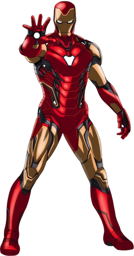
Pausa
Voltamos em—
Café. Banheiro. Respira.
Dúvida? Procura o Thiago ou o Michel.
A escada do dia
Bloco 3 — Apresentar a empresa
nome técnico: Memória(segundo cérebro)
1Conhecer quem ele é
2Aprender a conversar
3Apresentar a empresa
4Dar os acessos
5Treinar nos processos
6Fazer a primeira entrega
7Feedback toda semana
A virada
Até aqui, o cérebro. Agora, o seu primeiro agente.
O cérebro
Você pergunta. Ele responde.
+
O seu agente
Ele faz, na sua pasta.
Prompt qualquer um copia. Contexto, não.
O seu primeiro agente
O que faz dele um agente, e não um chat
Sabe quem você é
perfil, memória e a sua pasta
Tem corpo
abre, escreve e salva arquivo
Vai até o fim
e para pra você aprovar
Ele não te ensina a fazer. Ele faz por você.
Apresentar a empresa
As quatro memórias do seu braço direito
É o que faz ele saber quem você é, sem você repetir tudo.
Três ficam
Instruções de perfil
Você escreve uma vez só.
Memória automática
Ele aprende sozinho com você.
Pasta da empresa
Fica pra sempre, em qualquer IA.
Uma fica pra trás
Conversa de agora
Não vem junto. Só volta se pedir.
A tese do blocoO que importa da conversa vira arquivo na pasta: a memória que nenhuma IA apaga.
Como funciona a memória
Ela lembra do que você fala?
Conversa de hoje
Perfil
Memória
Pasta
A conversa
conversa nova
Conversa de amanhã
nasce limpa
Perfil
Memória
Pastao mapa
A conversasó se pedir
Não é gravador. Lembra do que tem FONTE.
2Prompt do manual
Prática
Ele já te conhece. Agora, crie o seu perfil.
1
Cole o prompt nº 2Na mesma conversa. Ele monta o perfil.
2
Ajuste do seu jeitoTroque o [colchete]. Quer mudar? Peça.
3
Gostou? Copie e coleConfigurações › Geral
4
Teste numa conversa nova“O que você sabe sobre mim?”
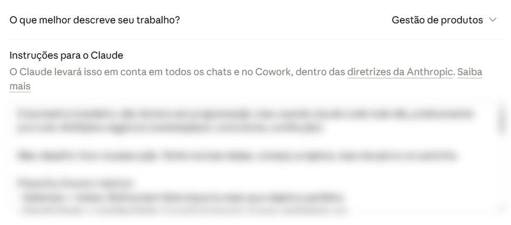
A pasta da empresa
Do seu perfil, o Claude monta a sua pasta.
Seu perfil
O que você vende
Pra quem
Como você decide
Meu Claude
.mdCLAUDEo mapa · lido sozinho
PessoalFinanças da casa · Viagens · Saúde
EmpresaVendas · Clientes · Financeiro
Amanhã, o Claude Code trabalha nesta mesma pasta.
A pasta da empresa
Três arquivos. Cada um no seu lugar.
Meu Claude
MDCLAUDE.md
MDMEMORIA.md
Empresa
Vendas
MDCONTEXTO.md
Pessoal …
MD
CLAUDE.mdO mapa. Na raiz. Ele lê sozinho.
MD
MEMORIA.mdNa raiz. O que vocês decidiram.
MD
CONTEXTO.mdEm cada pasta de assunto. Como ela está.
Terminou a tarefa? Diga salva o contexto
A pasta da empresa
Conversa, projeto e pasta
Três lugares pra guardar coisa. Só um é patrimônio.
Conversa
serve prafazer
Volta só se pedir.
fica só no Claude
Projeto
serve praorganizar
Uma mesa por trabalho.
fica só no Claude
Pasta
serve praguardar
É sua. Qualquer IA lê.
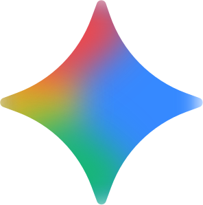
Método R2Pasta primeiro, sempre. Trocou de IA? A pasta vai junto.
Como ele lê
Quanto cabe numa conversa?
Ele mede tudo em tokens(pedacinhos de palavra).
Context window (janela de contexto)
1 milhão de tokenscerca de 2.500 páginas
resumo
Encheu? Ele compacta (resume o antigo)
Input (entrada: o que ele lê)Output (saída: o que ele escreve)
App do Claude
Compacta sozinho, sem avisar.
Claude Code
Você vê /context e manda /compact
Prática
Mão na massa · parte 1 · no Drive
Crie a pasta no seu Drive
1
Instale o Google Driveo programa, não o conector do Claude
2
Abra o Meu DriveExplorador (no Mac, Finder)
3
Crie a pasta“Meu Claude”
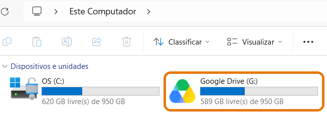
Não aparece o Google Drive? Chama o apoio.
3Prompt do manual
Prática 2
Conecte a pasta e pegue a Prática 2
1
Conecte a pastano app do Claude · conversa nova
2
Copie a Prática 2manual do aluno › Copiar
3
Cole e respondaele sugere as pastas
4
Gostou? pode criarNão gostou? peça pra mudar
Exemplo · sozinho
Meu Claude
Pessoal
Finanças da casa
Viagens
Saúde
Empresa
Vendas
Clientes
Financeiro
As regras da conversa
Duas frases que salvam o seu trabalho
Conversa é rascunho. Arquivo é pra sempre.
Antes de fechar
“Salva o contexto.”
O que decidiram vai pra pasta.
Na conversa nova
“Onde estávamos?”
Ele lê a pasta e continua.
DicaConversa muito longa ficou lenta? Salva e abre uma nova.
A ordem que muda o resultado
O mesmo Claude. Com e sem contexto.
Sabe só o pedidoresposta genérica
MD
Tem acesso a tudoresposta rica, do seu jeito
A dica de ouro do dia
Ele fala com confiança. Até quando erra.
primeira resposta
“Faça assim. É a melhor opção.” ✓ 100% seguro
nem sempre a melhor
Por quê? Faltou contexto.ele não conhecia o seu caso
“Antes, me pergunta o que falta.”ele te entrevista e o contexto aparece
“Me dá 3 opções.”a primeira nunca é a única
“Prós e contras. Qual você escolhe?”ele compara e diz o porquê
“Onde isso pode estar errado?”ele revisa a própria resposta
Quem decide é você. Ele te dá as opções.
A dica de ouro do dia
Critical thinking(senso crítico)
“Inteligente que resolve problema técnico? Isso é commodity.Esperto de verdade é quem enxerga depois da curva.”
Jensen Huang · CEO da NVIDIA
Você guia a máquina. Nunca o contrário.A experiência e o julgamento são seus. Não da IA.
Alinhamento de expectativas
A primeira versão é rascunho.
Ele acerta no vai e volta, até entender você.
v1
?
entendeu você
você
“falta o preço”
v2
entendeu você
você
“mais curto”
v3
agora sim
Pronto de verdade é quando você diz.
Microfone · 3 de 5
Fim do Bloco 3
A conversa não começa mais do zero. Agora ela tem um rastro.
Continue a nadar. Agora com mapa.
Perfilsabe quem você é
PastaPessoal e Empresa
Três arquivos.md · qualquer IA lê
Conversa antigavolta se pedir
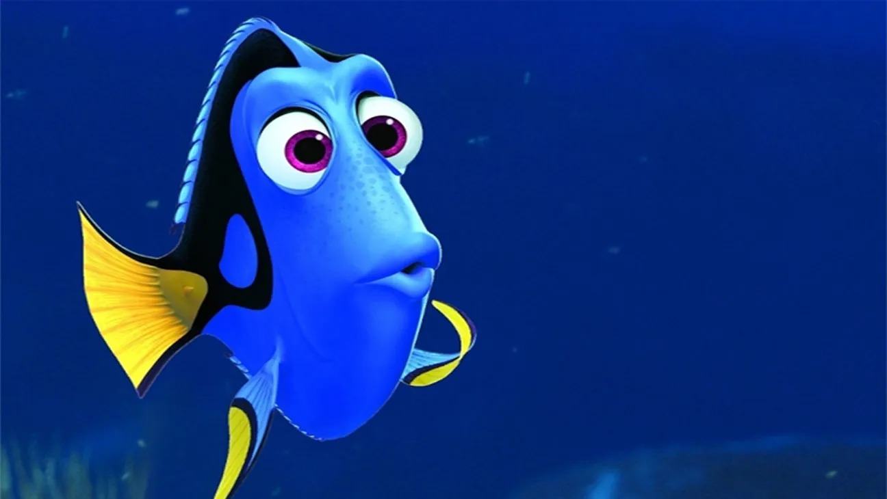
🎙️
Dúvidas? Quem quer mostrar como montou a estrutura?
A escada do dia
Bloco 4 — Dar os acessos
nome técnico: Conectores (MCP)
1Conhecer quem ele é
2Aprender a conversar
3Apresentar a empresa
4Dar os acessos
5Treinar nos processos
6Fazer a primeira entrega
7Feedback toda semana
Bloco 4 · Conectores (MCP)
O Claude entra nas suas ferramentas.
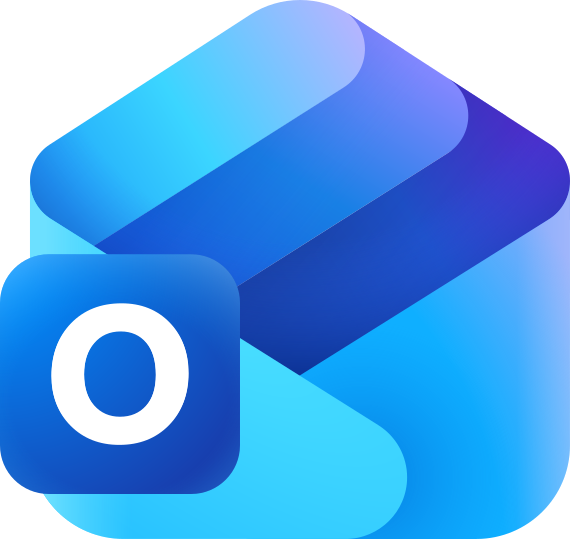
Configurações › Conectores
+400prontos
nome técnico: MCP
Prática
Ligue o seu e-mail
GmailouOutlook
1Configuraçõesclique nas suas iniciais
›
2Conectoresno menu da esquerda
›
3Descobrirache o Gmail ou o Outlook
›
4Clique no +entre com a sua conta
Google Drive: não ligue. A pasta já entra pelo computador.
Prática
O Claude no seu navegador
Claude no Chrome: duas partes
Parte 1No Chrome
1Chrome Web Store
›
2Claude✓ Anthropic
›
3Adicionar ao Chromee entre na conta
›
4Fixe na barra
Parte 2No Claude
5Configurações
›
6Claude in Chrome
›
7Ligue
O Claude e a internet
Três jeitos de usar a internet.
Lembra
memória (training data)
O que ele leu até junho. Depois disso, não viu.
“O que é margem de contribuição?”
treinojun4 meses ▸ hoje
Pesquisa
pesquisa na web (web search)
Busca agora e mostra a fonte. Notícia, preço, lei.
“Quanto está o dólar hoje?”
+ Pesquisa na web
Navega
navegador (browser)
Entra no site, clica e digita por você.
“Baixa as notas no portal do fornecedor.”
Navegador do app
site público · nada pra instalar
Claude no Chrome
site com o seu login
Bloco 4 · Computer use (uso do computador)
Ele mexe no mouse e no teclado. Sozinho.
Pra quando não tem conector (MCP) nem dá pelo navegador.
Usar o Excel?Permitir
Pede licençaapp por app
Use pra
Programa do computador sem conector
Passar dado de um sistema pro outro
Clicar e copiar todo dia, igual
Não use pra
Banco
Contrato
Saúde
Dado alheio
Configurações › Sistema › Uso do computador
liga uma vez
Windows
Mac
4 a 6Prompts do manual
Prática 3
Agora é você: veja ele trabalhar
Manual do aluno › Prática 3 · Veja ele trabalhar › Copiar
Teste 1No Chrome
Ele abre o site e pesquisa sozinho
No meu Chrome, pesquisa cadeira de escritório e me traz as três mais baratas…
precisa do Claude no ChromeCopiar
Teste 2No computador
O cursor anda sozinho
Abre a Calculadora do computador e calcula 15% de 2.380…
precisa do uso do computador ligadoCopiar
Funcionou? Agora no site que você usa toda semana. Não num de notícias.
Fechando o bloco
Tudo da sua operação chega no Claude.
mais diretomais lento
1 · Tem conector?
Conector(MCP)
Vai direto na fonte.
APIa porta oficial do sistema
2 · Não tem?
+
Navegador(browser)
Entra no site como você.
Web scrapingrobô lê o site (Playwright)
3 · Nem isso?
A tela(computer use)
Clica e digita por você.
Print + mousevê a tela e mexe
A ferramenta é igual pra todo mundo. O que muda é a sua criatividade.
Microfone · 4 de 5
Fim do Bloco 4
Você acabou de ganhar um gênio. Qual é o primeiro pedido?
1
Achar os clientes que sumiram e escrever pra cada um
2
Vigiar o preço dos concorrentes e me avisar quando mudar
3
Fechar o mês sozinho e mandar o relatório pro sócio
?
E o seu pedido?
🎙️
Chegando em casa, o que você vai pedir pra ele? Aquela coisa que nunca dava tempo.
Almoço
Voltamos em—
Almoço. Bom apetite.
A escada do dia
Bloco 5 — Treinar nos processos
nome técnico: Habilidades (skills) e plugins
1Conhecer quem ele é
2Aprender a conversar
3Apresentar a empresa
4Dar os acessos
5Treinar nos processos
6Fazer a primeira entrega
7Feedback toda semana
A virada do dia
MANHÃVocê ensina. Ele aprende.TARDEAgora ele trabalha do seu lado.
Muita coisa dá. Nem tudo deve. Quem escolhe é você.
A vantagem competitiva
Ele trabalha pra te dar três coisas
Tempo
O que levava 2 horas sai em 10 minutos — ou você pede e ele roda sozinho enquanto você faz outra coisa.
Custo
Você e o seu time entregam mais — sem contratar pra isso.
Clareza
Números organizados viram decisão melhor.
Isso é vantagem competitiva: quem usa bem, deixa pra trás o concorrente que não usa.
Microfone
Termômetro de dores
Comece pela sua maior dor.
Qual é a sua? Uma dor, uma frase.
Antes da prática
Toda tarefa tem a mesma anatomia
Faltou uma das três? Ele chuta.
Antes da prática
Ele não adivinha o que o seu documento diz
Compartilhar não é explicar.
Como o trabalho acontece
Frente, projeto, tarefa
Frente
a pasta da área
Projeto
um trabalho dentro dela
Tarefa
uma sessão
Frente = pasta
Financeiro
Fechar o mês
Sessão 1
Sessão 2
Sessão 3 · entrega ✱
Fluxo de caixa
Cobrança
Frente = pasta
Comercial
Tabela de preços
Proposta nova
Funil de vendas
O conceito
Você diz a frase. Ele acha o manual e segue.
Habilidade (skill) = um arquivo com o passo a passo.
O que vira habilidade (skill)
Pediu duas vezes? Vira habilidade (skill)
Antes de criar a sua
Um dentro do outro: repo › plugin › skill
Comece pelo pronto. Depois, crie a sua.
Prática 4
A tarde é sua
A sua maior dor vira a sua primeira habilidade (skill).
Prática
Passo 1 · Escolher
A tarefa certa tem quatro sinais
Travou? Análise da semana, em dashboard.
É o projeto de hoje.
7Prompt do manual
Prática
Prática · Passo 2
Frente, projeto e a primeira sessão
Frente = pasta
Financeiro
Projeto
Fechar o mês
Tarefa = sessão
Sessão 1
1Cole o prompt
MANUAL · PROMPT Nº 7
“Quero resolver uma dor do meu trabalho com você… Me entrevista, uma pergunta por vez.”
Copiar e colar ✓
2Responda a entrevista
ClaudeQual dor você escolheu?
VocêFechar a margem do mês.
Primeira versão na tela
Você não escreve: copia do manual e responde.
Microfone
Enquanto roda
O que você está fazendo?
E que artefato vai sair?
Prática
Prática · Passo 3
Vai e volta até o “agora sim”
1ª versão
Faltou
“falta a margem”
2ª
Formato
“quero em tabela”
3ª
Do seu jeito
“com os meus nomes”
Agora sim!
PARE AQUI
Disse “agora sim”? Pare: essa vira a habilidade (skill).
8Prompt do manual
Prática
Prática · Passo 4
Agora transforme em habilidade (skill)
Manual · Prompt nº 8Copiar e colar ✓
Agora sim!
relatorio-semanal.mdskill
Nome
relatorio-semanal
Quando usar
“quando eu pedir o relatório da semana”
Passo a passo
lê a pasta · pergunta · entrega
Ele escreve. Você só revisa.
9Prompt do manual
Prática
Prática · Passo 5
Salve a habilidade (skill) na sua conta
Conversa
Você · do manualSalva essa habilidade. Se não der daqui, gera o arquivo pra eu subir.
Precisa estar ligado: Capacidades › Execução de código
Usar
Peça a tarefa normal. Ou: “usa a relatorio-semanal”.
Melhorar
Diga o que mudar. Ele salva a versão nova.
Ponte pro sábado
Antes do café
Dois tipos de habilidade (skill)
A de hoje
Só texto
1ª vez
2ª vez
3ª vez
Cada vez sai de um jeitoMesma informação, cara diferente
A de amanhã · Claude Code
+Texto + código
1ª vez
2ª vez
3ª vez
Sai igualzinho toda vezO código monta o artefato
Hoje você criou a primeira. Amanhã, a que não muda nunca.
Microfone · 5 de 5
Fim do Bloco 5
Você não explica de novo. Ele já sabe.
🎙️
Qual dor virou a sua habilidade (skill)? E o que muda na sua segunda-feira?
Café da tarde
Voltamos em—
Café da tarde.
Depois do café: a sua habilidade (skill) trabalhando sozinha.
A escada do dia
Bloco 6 — Fazer a primeira entrega
nome técnico: Agente
1Conhecer quem ele é
2Aprender a conversar
3Apresentar a empresa
4Dar os acessos
5Treinar nos processos
6Fazer a primeira entrega
7Feedback toda semana
Bloco 6 · Fazer a primeira entrega
Agora deixa ele trabalhar.
✓ Manhã: contratou e treinou✓ Tarde: ensinou a habilidade (skill)● Agora
1
No horário que você marcar
2
Rodando
✓ Pronto. Tá nas Saídas.
Te avisa pelo celular
3
Entrega com cara de produto
Até aqui você pediu e esperou. Agora ele roda sozinho.
Ele trabalha sozinho · tarefa agendada
Toda segunda, às 7h, sem você pedir
Você pede uma vez, em qualquer conversa. Ele roda no horário, você dormindo.
Roda na nuvem, até com o computador desligado
Usa conector (MCP). Não lê a sua pasta
Ele trabalha sozinho · pelo celular
Do celular, ele trabalha por você
Bônus · design (front-end) com a sua cara
Da cara de IA pra sua cara
Cara de IA
O que você gosta2-3 exemplos (gosto, ou taste)
Logo
Cores
Letra
Com a sua cara
igual a todo mundo
Salva como habilidade (skill): toda entrega já sai com a sua cara.
10 a 13Prompts do manual
Mão na massa
Prática livre · 40 minutos · este painel fica no telão
Escolha por onde seguir
Claude · conversa nova
Contar mais
Ele te entrevista sobre a empresa.
Dar acesso
Configurações › Conectores (MCP)
Pôr pra trabalhar
Agende um resumo do seu e-mail. Ou mande pelo celular.
Perguntar
Não sabe se dá? Pergunta pra ele.
COLE DO MANUAL
“Me entrevista sobre a minha empresa, uma pergunta por vez.”“Quais três conectores (MCP) mais ajudam o meu negócio?”“Agenda um resumo do meu e-mail pra toda segunda às 7h.”“Quais três tarefas da minha semana você faria sozinho?”
↑
Travou? Levanta a mão · a equipe está circulando
Os prompts estão no manual
Etapa 4 · a mais importante
Não sabe como fazer? Pergunta pra ele.
A escada do dia
Bloco 7 — Feedback toda semana
nome técnico: Melhoria contínua
1Conhecer quem ele é
2Aprender a conversar
3Apresentar a empresa
4Dar os acessos
5Treinar nos processos
6Fazer a primeira entrega
7Feedback toda semana
O looping
É sempre o mesmo movimento.
Cada volta, ele fica mais esperto.
Hoje foi a primeira volta
Microfone
Fechamento da sexta
Um dia, sete passos.
👋
1
Conhecer quem ele é
💬
2
Aprender a conversar
🏢
3
Apresentar a empresa
🔑
4
Dar os acessos
🎓
5
Treinar nos processos
📦
6
Fazer a primeira entrega
🔁
7
Feedback toda semana
🎙️
O que você achou do dia? Qual passo você leva pra segunda?
14 a 16Prompts do manual
Fechamento da sexta
Agora, descansa. Amanhã, a gente coda.
Agora
🍻
Happy hour
Fica pra conversar.
Dúvida? A gente está aqui.
Hoje, se der
Instala o terminal
⌘ Mac abre o Terminal
curl -fsSL https://claude.ai/install.sh | bash
⊞ Windows abre o PowerShell
irm https://claude.ai/install.ps1 | iex
Confere terminal novo
claude --version
Copia do manualNão digite: uma letra errada e não roda.
Depois daqui, em casa ou amanhã cedo. Não deu? Amanhã a gente instala junto.
Amanhã
☕
Chega cedo
8hCafé da manhã
9hA gente coda
1 / 1·—·bloco há 00:00·--:--← → navega · N notas · I índice · S apresentador · R zera cronômetro